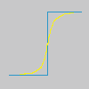
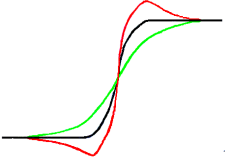

Out-of-focus photographs and most digitized images often need a sharpness correction. This is due to the digitizing process that has to divide a color continuum in points with slightly different colors. Elements smaller than the sampling frequency will be averaged into a uniform color. So sharp borders will be rendered a little blurred. The same phenomenon appears when printing color dots on paper.
The Sharpen filter (previously called Unsharp Mask) sharpens edges of the elements without increasing noise or blemish.
![[Tip]](images/tip.png)
|
Tip |
|---|---|
|
Some imaging devices like digital cameras or scanners offer to sharpen the created images for you. We strongly recommend you disable this means of sharpening and use GIMP filters instead. This way you regain the full control over the sharpening of your images. |
To prevent color distortion while sharpening, you can Decompose your image to HSV and work only on Value. Go to → → . Make sure the Decompose to layers box is checked. Choose HSV and click OK. You will get a new gray-level image with three layers, one for Hue, one for Saturation, and one for Value. (Close the original image so you won't get confused). Select the Value layer and apply your sharpening to it. When you are done, with that same layer selected, reverse the process by using Compose. Go to → → . Again choose HSV and click OK. You will get back your original image except that it will have been sharpened in the Value component.

- Presets, “Input Type”, Clipping, Blending Options, Preview, Merge filter, Split view
-
![[Note]](images/note.png)
Note These options are described in Section 2, “Common Features”.
- Radius
-
The slider and input boxes (0.0-1500.0) allow you to set how many pixels on either side of an edge will be affected by sharpening. It is better to always sharpen an image at its final resolution.
- Amount
-
This slider and input boxes (0.0-300.0) allow you to set the strength of sharpening.
- Threshold
-
This slider and input boxes (0.0-1.0) allow you to set the minimum difference in pixel values that indicates an edge where sharpen must be applied. So you can protect areas of smooth tonal transition from sharpening, and avoid creation of blemishes in face, sky or water surface.
Using an unsharp mask to sharpen an image can seem rather weird. Here is the explanation:
Think of an image with a contrast in some place. The intensity curve of the pixels on a line going through this contrast will show an abrupt increase of intensity: like a stair if contrast is perfectly sharp (blue), like an S if there is some blur (yellow).

Now, we have an original image with some blur (black curve) we want to sharpen. We apply some more blur: the intensity variation will be more gradual (green curve).
Let us subtract the difference between blurredness intensity (green curve) and the intensity of the original image (black curve) to the intensity of the original image (black curve). We get the red curve, which is more abrupt: contrast and sharpness are increased. QED.

Unsharp mask was first used in silver photography. The photographer first creates a copy of the original negative by contact, on a film, placing a thin glass plate between both; that will produce a blurred copy because of light diffusion. Then both films are placed in a photo enlarger, to reproduce them on paper. The dark areas of the positive blurred film, opposed to the clear areas of the original negative will prevent light to go through and so will be subtracted from the light going through the original film.
In digital photography, with GIMP, you will go through the following steps:
-
Open your image and duplicate it →
-
In the copy, duplicate the layer → , then from the Filters menu apply → to the duplicated layer with the default IIR option and radius 5.
-
In the Layers dialog of the duplicated image, change Mode to “Subtract”, and in the right-click menu, select “Merge down”.
-
Click and drag the only layer you got into the original image, where it appears as a new layer.
-
Change the Mode in this Layers dialog to “Addition”.
Voilà. The “Sharpen (Unsharp Mask)” filter does the same for you.
At the beginning of the curve, you can see a dip. If blurring is important, this dip is very deep; the result of the subtraction can be negative, and a complementary color stripe will appear along the contrast, or a black halo around a star on the light background of a nebula (black eye effect).